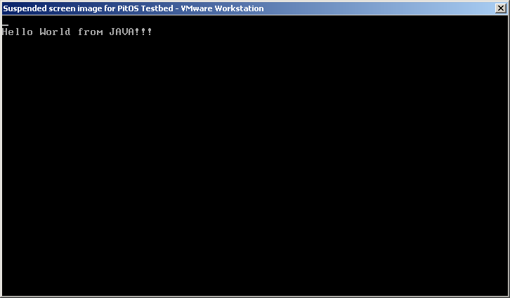
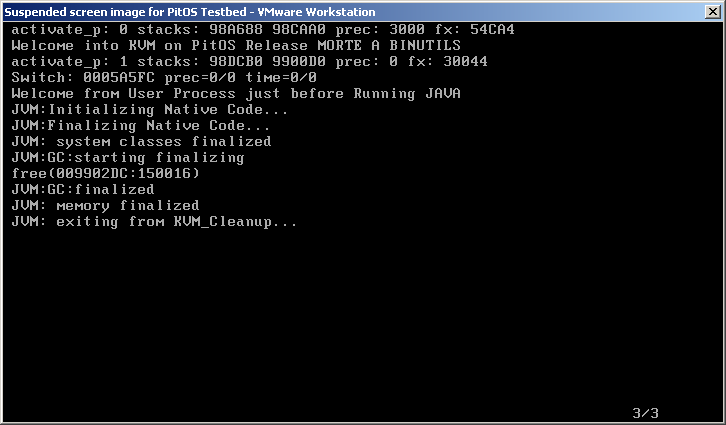
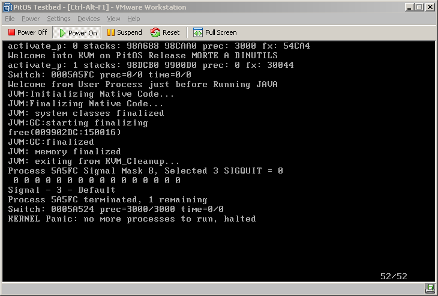
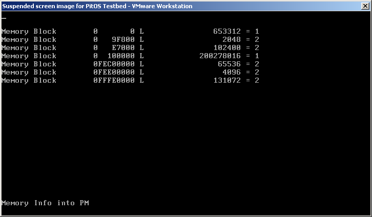

Some Snapshots
Java K Virtual Machine
One of the test projects is the integration of the KVM into my small kernel...

The output from a simple Hello program:
import java.io.*;
public class test
{
public static void main(String[] args)
{
System.out.println("Hello World from JAVA!!!");
}
}

The PitOS kernel logging, obtained pressing the ESC (virtual terminal switch)

The same logging after the termination signal sent, now it's succesfully halted
One of the first run: Memory Range Analysis
